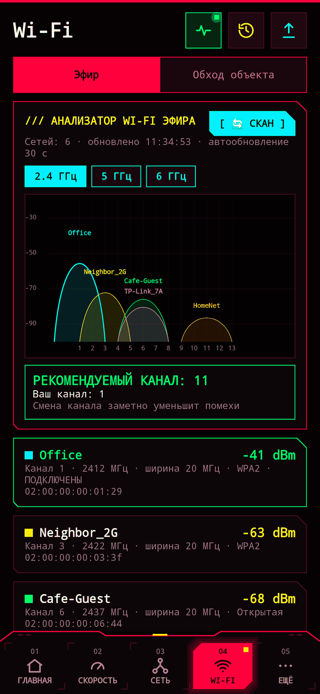
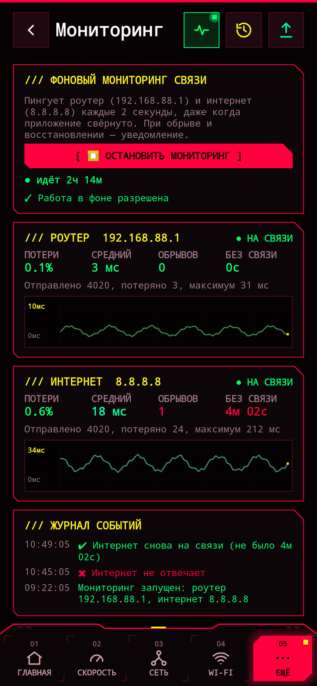
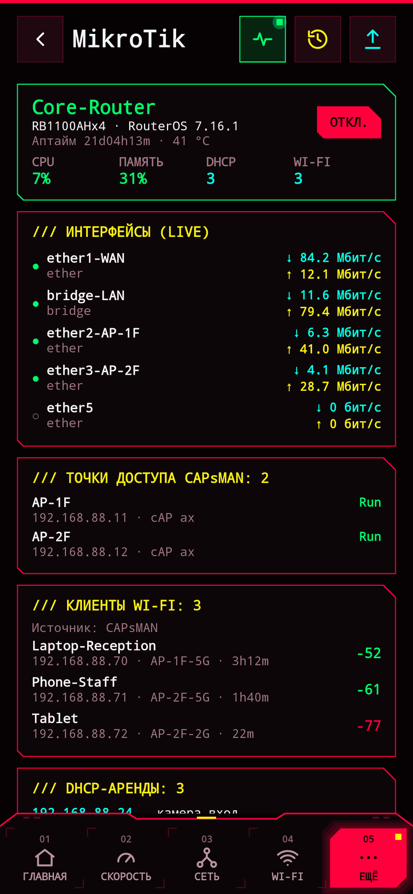
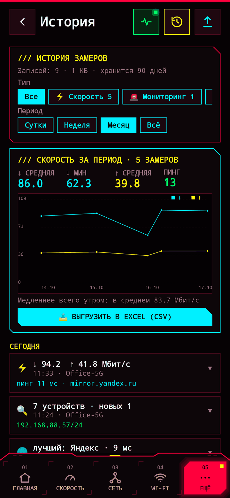
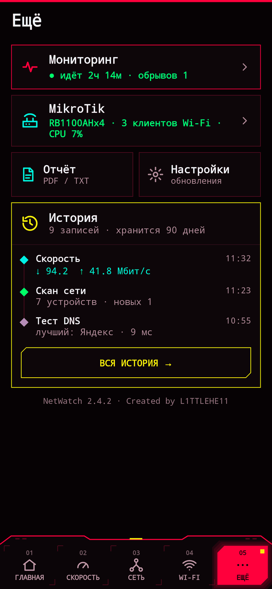

Бесплатный сетевой сканер и Wi-Fi анализатор для Android
Найдёт все устройства в сети, подберёт канал Wi-Fi, замерит скорость, поймает обрывы провайдера и покажет, что творится на MikroTik. Без рекламы, без сбора данных, с открытым кодом.
ЧТО УМЕЕТ
Все устройства в подсети за 10–30 секунд: роутеры, MikroTik, IP-камеры, принтеры, Android TV и Smart TV, компьютеры, iPhone, NAS. Открытые порты, имена устройств, метка «новое».
Все сети вокруг на графике каналов 2.4 / 5 / 6 ГГц и рекомендация самого свободного канала для вашей точки доступа.
Многопоточный замер скачивания и отдачи с живыми шкалами, пинг и джиттер, история и итог за неделю: когда интернет медленнее всего.
Круглосуточная проверка роутера и интернета в фоне, уведомления об обрывах, статистика потерь и время без связи — для разговора с провайдером.
Замеры сигнала и пинга по точкам здания («номер 204», «ресепшн»), проблемные места подсвечиваются, отчёт в Excel и PDF.
Traceroute, сравнение DNS-серверов, сканер портов с расшифровкой служб, live-пинг любого узла, TCP-тест скорости в локальной сети, Wake-on-LAN.
Подключение по RouterOS API: нагрузка, трафик по портам в реальном времени, точки CAPsMAN, Wi-Fi клиенты с уровнем сигнала, DHCP-аренды.
Все замеры сохраняются на телефоне, фильтры по сети и периоду, PDF-отчёт одной кнопкой, виджет на рабочий стол.
СКРИНШОТЫ






КАК УСТАНОВИТЬ
- Скачайте NetWatch-2.4.2-universal.apk на телефон.
- Откройте файл и разрешите установку из этого источника.
- Разрешите доступ к геолокации — без него Android скрывает имя Wi-Fi сети.
ПРИВАТНОСТЬ
NetWatch ничего не собирает и никуда не отправляет. Нет аналитики, рекламы, учётных записей и собственных серверов. Все замеры хранятся только на вашем телефоне.
Геолокация нужна лишь потому, что Android без неё не показывает имя сети и результаты сканирования Wi-Fi. Политика конфиденциальности.
IN ENGLISH
NetWatch is a free, open-source network scanner and Wi-Fi analyzer for Android: LAN device discovery (with mDNS and UPnP), Wi-Fi channel analyzer with best-channel advice, multi-threaded speed test, 24/7 outage monitor, site survey with CSV/PDF export, traceroute, DNS benchmark, port scanner, Wake-on-LAN and a MikroTik RouterOS API client. No ads, no tracking. Interface language: Russian.